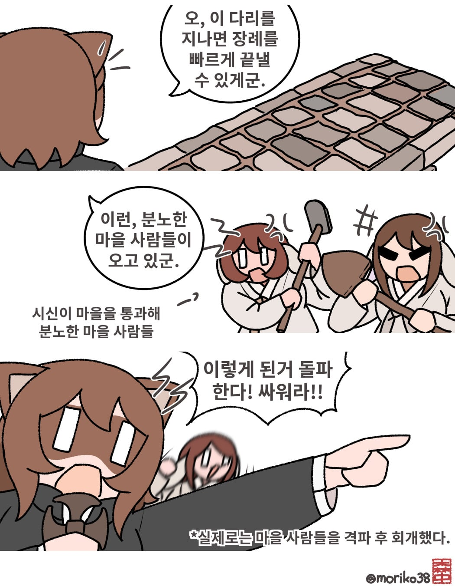

마을을 통과해 운구할 수 없으며, 읍면 소재지에는 사자가 나가는 문이 따로 있는 법인데, 보통 시신은 일반적인 문을 지나갈 수 없다.
을이라는 사제가 한번은 곤란을 당한 적이 있다.
무덤으로 가는 힘든 길이었는데, 가는 도중 넓은 시내가 있었다.
다리를 건너면 마을 가운대로 곧장 길이 나오기에 몇 마일은 거리를 줄일 수 있었다.
그래서 장례 행렬이 다리를 건넜더니 마을사람들이 우르르 몰려와서는 이내 주먹다짐이 오가고, 삽과 괭이를 휘두르는 등 싸움판이 벌어졌다.
무덤에 도달했을 때, 사제 이하 모든 교인이 회개를 할 수 밖에 없었다.
그들은 마을사람들을 격파해버렸던 것이다!
-영국 성공회 선교사의 눈에 비친 한국인의 신앙과 풍속(원제: The English Church Mission in Corea: Its Faith and Practice), 세실 허지스
신앙보다 가까운 주먹